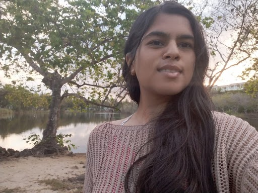
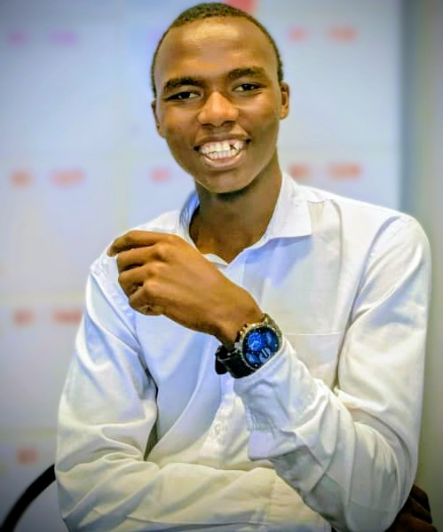
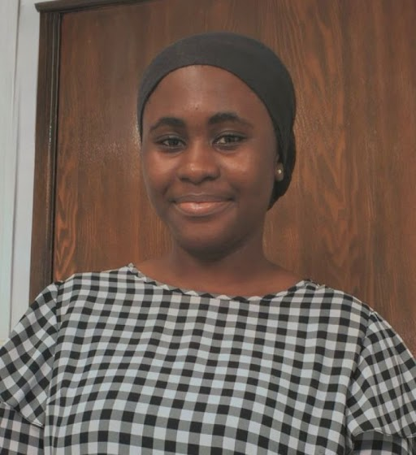

tejasvini pudaruth
Tejasvini D.P. enjoys writing fantasy and has a natural love for poetic, atmospheric storytelling. They’re drawn to imaginative worlds, vivid imagery, and characters shaped by legend and wonder. Writing is their way of exploring the magic hidden in stories and the emotions that linger between the lines.

victor onchuru
Victor Onchuru is a contemporary poetic artist and elocutionist whose work sits at the crossroads of social change, culture, and creative expression. With a passion for art, design, and the vibrancy of Kenyan heritage, he champions education by engaging young people through poetry and performance -- cultivating a new wave of versatile verse-makers who value the power and impact of spoken word. A seasoned poetry adjudicator and devoted preserver of the Swahili language, Victor brings over seven years of experience in composition, training, and performance at the Kenya National Music Festivals, using his craft to shape voices, stories, and the evolving landscape of modern African art.

halimatu sadia mohammed
Halimatu Sadia Mohammed is a student writer and emerging voice passionate about telling stories that blend both personal truth with broader social realities. She draws inspiration from everyday encounters, exploring themes of resilience, identity, and the quiet strength found in difficult places. When she’s not writing, she enjoys learning new skills, reflecting on life’s complexities, and finding meaning in conversations that challenge her perspective.
photo
gusenga zirikana
Gusenga Zirikana is...
photo
michelle ndumi musili
Michelle Ndumi Musili is...